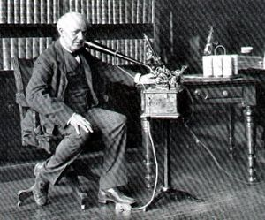

Infancia y juventud

Thomas Edison nació en 1847 en Milan, Ohio, aunque creció en Port Huron, Míchigan, donde su familia se estableció en 1854. Fue el séptimo y último hijo de Samuel Ogden Edison Jr. (1804-1896) y de Nancy Matthews Elliott (1810-1871). Sus antepasados provenían de Ámsterdam y se establecieron en el río Passaic, en Nueva Jersey. El apellido original era «Edeson». John Edison, abuelo del inventor, se alistó en el bando de los británicos durante la Guerra de la Independencia; cuando esta finalizó tuvo que refugiarse en Nueva Escocia, Canadá, desde donde se trasladó a Bayham, en la región del lago Erie. Al estallar la rebelión canadiense de 1837, Samuel Edison se unió a los insurgentes y una vez más, la familia se vio obligada a emigrar; esta vez de regreso a los Estados Unidos. En ese momento Samuel y su esposa Nancy, estadounidense de ascendencia escocesa, ya tenían cuatro hijos. En 1840 Samuel Edison estableció una pequeña maderería en Milan, Ohio. Allí nacieron tres hijos más, pero tres de los primeros murieron durante la década de 1840. Al momento del nacimiento de Thomas los sobrevivientes eran tres y tenían dieciocho, dieciséis y catorce años. Thomas nació el 11 de febrero de 1847 y fue llamado «Thomas» por un tío abuelo, y «Alva» en honor del capitán Alva Bradley, amigo de su padre. En 1855 a los ocho años y medio Edison ingresó a la escuela. Después de tres meses fue calificado como alumno "estéril e improductivo" Como resultado de esto, Nancy, una mujer muy culta, sacó al niño del colegio y lo educó en su casa. Es imposible establecer si Nancy Edison tomó muy en serio la opinión del maestro o si pensó que ella era mejor que el profesor de su hijo; pero Edison recordó durante el resto de su vida el incidente. Una leyenda urbana muy difundida añade que el pequeño Thomas llevó a su madre una nota del maestro en sobre cerrado, al leerla, Nancy, una mujer muy culta, dijo que el niño era tan inteligente que no podía permanecer en la escuela por lo cual, añadió ella, sería educado en su casa. Al llegar a la adultez, Edison encontró la carta y comprobó que en realidad era una nota de expulsión. La educación del niño comenzaba después de las tareas domésticas, su madre le enseñó a leer y escribir correctamente, además de aritmética, y lo interesó por obras como La caída del Imperio Romano, de Gibbon, novelas de Dickens y dramas de Shakespeare. En torno a los 9 años Thomas comenzó a leer solo, en parte impulsado por su padre, Samuel, quien le daba 10 céntimos cada vez que concluía un libro. En 1859 Thomas empezó a vender diarios en el tren matutino que iba de Port Huron a Detroit, así como verduras, mantequilla y moras. En Detroit el tren hacía una parada de seis horas, las cuales aprovechaba pasándolas en el salón de lectura de la Asociación de Jóvenes (después Biblioteca Gratuita de Detroit). Ahí, comenzaba por leer el primer libro que se encontraba en el anaquel inferior y seguía por orden con los demás hasta terminar con toda la hilera. Edison no quedaba satisfecho con solo leer, y comenzó a realizar diversos experimentos basándose en lo que leía en los libros de Ciencia. Utilizaba un vagón vacío como laboratorio, donde también instaló una pequeña prensa de mano que se agenció cuando un amigo del Detroit Free Press le regaló algunos tipos. El resultado fue inmediato: el Grand Trunk Herald, semanario del que Edison tiraba cuatrocientos ejemplares.
Telegrafista
Tras salvar a un niño en las vías del tren en Port Huron, el agradecido padre de la criatura J. U. Mackenzie (telegrafista de la estación) le enseñó código morse y telegrafía. A los quince años obtuvo su primer trabajo como telegrafista, reemplazando a uno de los operadores de telégrafo que habían ido a servir en la Guerra Civil. A los 16 años, después de trabajar en varias oficinas de telégrafos, donde realizó numerosos experimentos, finalmente llegó con su primera auténtica invención, llamada "repetidor automático", que transmite señales de telégrafo entre estaciones sin personal, lo que permite que prácticamente cualquiera pueda traducir fácilmente y con precisión un código a su propio ritmo y conveniencia. Curiosamente, nunca patentó la versión inicial de esta idea.
Primera patente
Edison ideó un instrumento sencillo para el recuento mecánico de votos en 1868. Se podía colocar en la mesa de cada representante; tenía dos botones, uno para el voto en pro y otro para el voto en contra. Para tramitar la patente, Edison contrató al abogado Carroll D. Wright. El instrumento se llevó ante un comité del Congreso de Washington. Ahí el veredicto fue brusco pero honesto: "Joven, si hay en la tierra algún invento que no queremos aquí es exactamente el suyo. Uno de nuestros principales intereses es evitar fraudes en las votaciones, y su aparato no haría otra cosa que favorecerlos".
El mago de Menlo Park
En 1869, Edison y Franklin Pope ofrecieron sus servicios como ingenieros electricistas, una especialidad desconocida por entonces. Pero Edison se retiró porque sentía que no ganaba suficiente.18 En Nueva York, consiguió un empleo de condiciones muy ventajosas tras reparar una grave avería en un indicador telegráfico que señalaba los precios del oro en la bolsa de valores.  Trabajó en la compañía telegráfica Western Union como inventor y reparador, aunque poco después se independizó y en 1877 llevó a cabo uno de sus más importantes inventos, el fonógrafo. Este invento despertó el interés internacional y llegó a cumplir un papel diplomático. Edison obsequió una máquina parlante a Porfirio Díaz en 1889, a partir de la cual se enviaron mensajes fonográficos e intentó expandir su negocio en México. En 1876, Edison se mudó de Newark a Menlo Park, Nueva Jersey, donde reunió un grupo de ayudantes y mecánicos y estableció una "fábrica de inventos". En 1887, cuando dejó Menlo Park, contaba con una lista de casi cuatrocientas patentes. Aunque se le atribuye la invención de la lámpara incandescente, esta en realidad solo fue perfeccionada por él, quien, tras muchos intentos consiguió un filamento que alcanzara la incandescencia sin fundirse. Este filamento no era de metal, sino de bambú carbonatado. El 21 de octubre de 1879 consiguió que su primera bombilla luciera durante 48 horas seguidas. En la víspera de Año Nuevo del mismo año, se hizo funcionar con éxito en Menlo Park el primer sistema de alumbrado, construido por Edison, constituido por cincuenta y tres focos. En 1880 se asocia con J. P. Morgan para fundar la Edison Electric. Después J. P. Morgan adquiriría sus acciones para crear General Electric. En el ámbito científico, descubrió el efecto Edison, patentado en 1883, que consistía en el paso de electricidad desde un filamento a una placa metálica dentro de un globo de lámpara incandescente. Aunque ni él ni los científicos de su época le dieron importancia, estableció los fundamentos de la Válvula termoiónica y de la electrónica, el denominado efecto Edison, fenómeno de vital importancia para la electrónica de los años 1950 y 1960.
Guerra de las corrientes
En la década de 1880, la iluminación de arco en calles y espacios públicos eran un negocio en expansión en los Estados Unidos, Europa y algunas ciudades de América. La alimentación para estas luminarias era suministrada por medio de generadores de corriente continua (CC), provistos por la compañía de Edison, pero pronto tuvo que enfrentar la competencia con los sistemas de corriente alterna (CA). Con el desarrollo de los transformadores de la Westinghouse Electric se hizo posible transmitir corriente alterna a largas distancias a través de cables más delgados y más baratos, y reducir el voltaje en el destino para su distribución a los usuarios. Esto permitió que la corriente alterna se usara en las pequeñas empresas y los clientes domésticos ya que las plantas de corriente continua de Edison estaban diseñadas para suministrar energía a las grandes ciudades. Edison sostuvo públicamente que la corriente alterna no daba buenos resultados y, sobre todo, que los altos voltajes que utilizaba eran peligrosos. Cuando George Westinghouse instaló sus primeros sistemas de corriente alterna en 1886, Edison lo atacó duramente: "Es tan cierto como la muerte que Westinghouse matará a un cliente dentro de los seis meses posteriores a la instalación de cualquier sistema, se trata de algo nuevo y requerirá una gran número de experimentos para que funcione de manera práctica". Esta postura tan terminante ha sido explicada de varias maneras; es posible que Edison no fuese capaz de captar las bases teóricas de la corriente alterna, o bien que estuviera genuinamente preocupado por el alto voltaje de los sistemas de corriente alterna en uso, los cuales mal instalados, eran un riesgo para los clientes y una mala reputación para el desarrollo de la energía eléctrica. Además, su compañía, la Edison Electric se basaba en la corriente continua de bajo voltaje con más de cien instalaciones hasta el momento, por lo cual cambiar el estándar implicaba una gran pérdida. Sin embargo, en 1887 la Edison Electric estaba perdiendo participación de mercado frente a Westinghouse, que ya había construido 68 centrales eléctricas de CA frente a las 121 estaciones de corriente continua de Edison y, para empeorar las cosas, la Thomson-Houston Electric Company de Lynn, Massachusetts, añadía 22 centrales eléctricas de corriente alterna. Al mismo tiempo, las líneas de corriente alternan montadas en postes provocaron una serie de muertes en la primavera de 1888; lo que provocó la preocupación del público y numerosas notas en la prensa en contra de la corriente alterna de alto voltaje y de las codiciosas e insensibles empresas que la usaban.2627 Edison aprovechó esta situación y se unió al inventor Harold P. Brown en una campaña contra la CA. Esta campaña fue conocida como la guerra o batalla de las corrientes y consistió en polémicas públicas, artículos en los periódicos y una fuerte presión para que el Congreso aprobase una legislación que controlara, limitándolo, el voltaje de las instalaciones de CA. En una maniobra de propaganda, Edison y Brown intentaron mostrar que la corriente alterna era el sistema más adecuado para la recientemente inventada silla eléctrica logrando que la primera de ellas fuese alimentada por un generador de la Westinghouse. Al mismo tiempo realizaron algunas ejecuciones públicas de animales usando también la CA, si bien es falso el difundido relato de la ejecución de la elefanta Topsy, que tuvo lugar muchos años después. Esta campaña anti CA, no cayó bien en sus propios accionistas, ya que a principios de 1890, la compañía de Edison obtenía ganancias mucho menores que sus competidoras. En 1892, la Guerra de las Corrientes llegó a su fin cuando Edison perdió el control de su empresa, la cual se fusionó con Thomson-Houston (una idea de J.P. Morgan) para crear la General Electric, que controlaba las tres cuartas partes del suministro eléctrico de los Estados Unidos y competía directamente con Westinghouse por el mercado de la corriente alterna.
Relación con Tesla
En 1884, el gerente de Edison Charles Batchelor, quien había estado supervisando la instalación eléctrica en París, regresó a los Estados Unidos para administrar Edison Machine Works, una división de fabricación de Edison Electric ubicada en Nueva York, y le pidió a un colaborador, el ingeniero Nikola Tesla que lo acompañase.Tesla aceptó, emigró a los Estados Unidos y comenzó a trabajar casi de inmediato en el taller de la empresa, ubicado en el Lower East Side de Manhattan, con una fuerza laboral de varios cientos de maquinistas, obreros, personal administrativo y una veintena de ingenieros. Al igual que en París, Tesla continuó trabajando en la solución de problemas de las instalaciones y en la mejora de los generadores.34 El historiador W. Bernard Carlson señala que Tesla pudo haberse encontrado no más de un par de veces con Edison, una de ellas cuando Tesla, después de permanecer despierto toda la noche reparando las dínamos dañadas en el transatlántico SS Oregon, se encontró con Batchelor y Edison quienes bromearon sobre su "estilo parisino" de trasnochar; Tesla les contó lo que había estado haciendo, por lo que Edison lo elogió diciendo: "es un gran tipo". Uno de los proyectos entregados a Tesla era el desarrollo de un sistema de alumbrado público basado en lámpara de arco. La iluminación de arco era el tipo de alumbrado público más popular, pero requería altos voltajes y era incompatible con el sistema incandescente de bajo voltaje de Edison, lo que provocó que la empresa perdiera contratos en algunas ciudades. De todos modos, los diseños de Tesla nunca se pusieron en producción, debido a mejoras técnicas en el alumbrado incandescente y a un acuerdo de instalación que Edison hizo con una empresa de iluminación de arco. Tesla había estado trabajando unos seis meses cuando renunció.33 No están claros los motivos. Es posible que haya sido por una bonificación que no recibió, ya sea por rediseñar los generadores o por el sistema de iluminación de arco que se archivó. Tesla tuvo enfrentamientos previos con la empresa sobre bonificaciones impagas y, en su autobiografía, declaró que el gerente de Edison Machine Works, es decir Batchelor, le había ofrecido un bono de 50.000 dólares para diseñar "veinticuatro tipos diferentes de máquinas estándar", "pero que resultó ser una broma". Versiones posteriores de esta historia muestran al propio Edison ofreciendo y luego renegando del trato, diciendo: "Tesla, no entiendes nuestro humor americano". Lo extraño de estas historias es el monto de la bonificación dado que Batchelor era tacaño con la paga y es poco probable que la compañía tuviese una suma tan grande (más de un millón de dólares a valores de 2010) en efectivo.4344 El diario de Tesla contiene solo un comentario sobre lo que sucedió al final de su empleo, una nota que garabateó en las dos páginas que abarcan desde el 7 de diciembre de 1884 hasta el 4 de enero de 1885, diciendo "Adiós a Edison Machine Works". Al año siguiente, Tesla se asoció a la Westinghouse Electric y como parte de ella tomó partido por el uso de la corriente alterna en la guerra de las corrientes.
Fallecimiento
La actividad de este genial inventor se prolongó más allá de cumplidos los ochenta años, completando la lista de sus realizaciones tecnológicas hasta totalizar las 1.093 patentes que llegó a registrar en vida. La arteriosclerosis, sin embargo, fue minando la salud del inventor, cuyo fallecimiento tuvo lugar el 18 de octubre de 1931, en West Orange, Nueva Jersey.